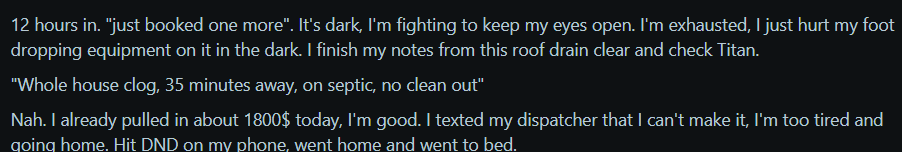
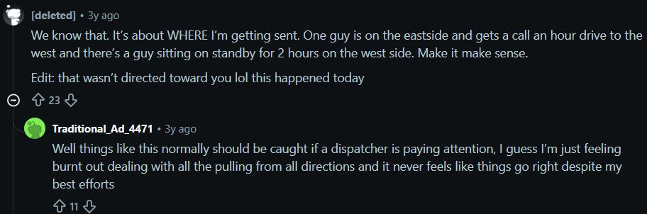

A dispatcher's agent for day-of-service disruptions
Use the left and right arrow keys to move between sections.
01 · Product recommendation
A dispatcher copilot for call-outs
Dispatchers need a scheduling mechanism they can trust, inspect and undo when the day falls apart.
Detail: summary of the sections below
Picture a plumbing company's morning. Dana, a gas-certified plumber, calls out sick. Three of her jobs are now at risk, including a $1,850 install, and covering them pushes another technician's day around. Who is qualified? Who is free? Who is close enough? Which job do you protect, and who do you tell? (This is the synthetic day my prototype runs.)
I built a dispatcher copilot for that moment. It proposes how to cover each job and explains why. Code checks that every move is safe, applies the low-risk ones on its own, and holds the rest for the dispatcher. One click undoes all of it.
What I noticed
Housecall Pro's calendar has drive-time optimization and drag-and-drop, but nothing that flags a technician with overlapping assignments. Overall rescheduling is left to the dispatcher. Technicians on Reddit describe the result: over-scheduled days, declined jobs and call-outs.
What I built
The model proposes a plan, deterministic checks validate it, and the dispatcher can approve, switch to an alternative, reject or undo.
The bet
Use model judgment for free-text notes and moves that ripple into other jobs. Use code for the guarantees: safety, permissions, logging and undo.
02 · Customer problem
The customer problem
I started from the dispatcher's morning and from what technicians say about being scheduled, then picked the call-out as the sharpest slice.
In the product: I signed up for Housecall Pro and reviewed the calendar. It optimizes for drive time and supports drag-and-drop, but I found no feature that flags a technician with overlapping assignments.
On Reddit: home-service professionals describe being over-scheduled, getting frustrated with dispatch, and declining jobs or calling out. Two comments below.

A technician 12 hours into a day, offered "just one more" job, texts the dispatcher they can't make it and goes home. Over-scheduling ends in a declined job.

One technician is sent an hour across town while another sits on standby nearby. A reply describes burnout from "pulling from all directions." Poor assignment and tired dispatchers feed each other.
Two comments from the many I read, chosen because they show both sides of the same problem: the technician stretched too far, and the assignment that did not need to happen. They are individual accounts, shown as texture, not as data.
Who this is for
Who: an office manager or dispatcher at a home service business with 7 to 10 technicians.
Pain: when a job runs long, a technician calls out, or a customer reschedules, they re-plan the day by hand. They work out who is qualified and free, how far each person must travel, which job to protect, and who to tell, while the phone keeps ringing.
Anchor: on-demand trades (plumbing, HVAC), where qualifications limit who can cover a job and a lost job is costly. Route-based businesses (cleaning, pool) are the same problem with a different goal, which the agent takes as configuration.
What it looks like
Good
The day is settled quickly. High-value and urgent jobs are covered by qualified technicians. The dispatcher only makes the decisions that matter and can see why each change was made.
Failure
A job is left uncovered and nobody notices. An unqualified technician is sent. A customer's time changes without a warning. The dispatcher cannot tell what the agent did or cannot undo it.
Why the call-out
I chose the call-out as a high-impact slice, prompted by what I read and by the missing overlap flag. My rough scores (call-out 8, job running long 7, reschedule 5) are my own prioritization, not research findings.
A call-out hits several jobs at once and forces the hard parts: qualification, delay versus hand-off, and a natural failure case. The same reasoning carries over to the other two.
03 · Scope and assumptions
Assumptions and scope
One realistic slice is in scope: cover a technician call-out with synthetic schedule data; validate the problem with dispatchers next.
Detail: PLAN.md Confirmed vs. assumed; assumptions register A1 to A8; decision 0012
Confirmed it comes from the case, my own product review, or was decided by me.
Observed it comes from informal Reddit comments.
Assumed it is a hypothesis I have not checked.
Item
Status
Note
Focus user: dispatcher at a business with 7 to 10 technicians
Confirmed
From the case
The agent must let users set autonomy, approvals and technician qualifications
Confirmed
From the case
Industries differ: drive distance for cleaning and pool, revenue for plumbing and HVAC
Confirmed
The case states the pattern; the mapping to defaults is mine
Scope is the technician call-out only
Confirmed
My decision; job running long and customer reschedule are future work
Moving a job to another qualified technician at the same time is low risk; delays and schedule changes need approval by default
Confirmed
My product decision, with an Always setting for businesses that want fewer approvals
The existing calendar has drag-and-drop editing, color coding and clear time blocks, and offers drive-time optimization
Confirmed
My own review after signing up; not checked against documentation
The existing calendar has no feature that flags a technician with overlapping assignments
Confirmed
What I saw in my own review; I may have missed a setting or a plan tier
Technicians describe being over-scheduled, frustrated with dispatch, and declining jobs or calling out
Observed
Informal Reddit comments (two shown in Problem); anecdotal
Over-scheduling and poor assignment are common, and cause declined jobs and call-outs
Assumed
Reddit shows it happens, not how often or why
Flagging overlap and showing each job's impact would reduce over-scheduling
Assumed
The reason the agent checks overlap and shows impact; untested
Dispatchers, not just technicians, feel the strain (a Reddit reply cites burnout)
Assumed
One comment; no dispatcher consulted
The eight friction points are real and in this form
Assumed
Hypotheses; no dispatcher consulted
On-demand disruptions are more frequent and harder than route-based
Assumed
No source
Delay limits (60 and 240 minutes) and job values
Assumed
Examples in synthetic data
$2,250 of work at risk in the base scenario
Assumed
Comes from synthetic data; not a market figure
Scope
In scope one end-to-end slice with synthetic data: an agent decision with reasoning, an action (automatic or after approval), and approval and failure paths.
In scope what the Reddit accounts point to: checking overlap before anything is applied, showing each job's impact, and never cancelling a job.
Simulated integrations and customer messages.
Out of scope a job running long, a customer reschedule, real Housecall Pro integrations, real data, authentication, production routing, and a standalone overlap warning for hand edits.
04 · Product configuration
What is shared and what is configurable
The safety process is shared; scheduling priorities, autonomy and technician qualifications vary by business.
Detail: PLAN.md Scope for the prototype; decisions 0003, 0007, 0014, 0015, 0016
Shared by every business: how it works
Reason: find the affected jobs, check qualification, availability and travel, rank, then delay or hand off.
Check: qualified, free, enough travel time, within the urgency limit, inside the workday. Done in code; the agent cannot bypass it.
Control: every change can be approved or rejected, undone, and is logged. A hand-off always states its reason.
Configurable per business
Scheduling goal (Job revenue for plumbing and HVAC, Drive time for cleaning and pool): Settings panel. Profiles and their criteria live in a config file; the criteria are sent to the model so it can name the deciding one.
Goal: cover the absent technician's jobs, optimizing the active goal (job revenue or drive time) within urgency limits.
Context and tools: one prompt with the schedule, skills, travel times, rules, goal and permissions; no tools at run time. The model returns a structured proposal; code validates, applies, logs and undoes.
Permissions: set by the dispatcher through the autonomy level.
flowchart TD
A["Dispatcher reports a call-out"] --> B["Code assembles the inputs: schedule, travel times, skills, goal, permissions"]
B --> C["Agent: one model call returns a proposal with reasoning, alternatives and confidence"]
C -->|"model error"| H["Hand off: reason shown, schedule unchanged"]
C --> V{"Safety checks: qualified, free, travel time, urgency, workday"}
V -->|"fails, first time"| R["One retry with the errors fed back"]
R --> V
V -->|"fails again"| H
V -->|"passes"| P{"Autonomy setting and confidence"}
P -->|"allowed and confident"| X["Apply, notify the customer, log"]
P -->|"needs approval or low confidence"| D["Dispatcher: approve, switch to an alternative, restore, or reject"]
D -->|"approve"| X
D -->|"reject"| N["No change, logged"]
X --> U["Undo available; every step in the audit log"]
H --> U2["Dispatcher takes over; logged"]
From call-out to outcome. The model proposes; code checks, applies, logs and undoes.
What the agent does on its own, and when it stops
When
What happens
On its own (Recommended)
Move a job to another qualified, free technician at the same time. The customer is sent an update (simulated). Always logged and undoable.
Needs approval (Recommended)
A delayed start, a shifted job, or anything else that changes a customer's promised time. The dispatcher can approve, switch to the agent's alternative, restore the original, or reject.
Stops and hands off
A job with no feasible option goes to the dispatcher; safe independent jobs may proceed. A model error, or a plan that still fails safety checks after one retry, is handed off unapplied. A plan under 0.7 confidence waits for approval; low confidence alone is not a hand-off.
Never done
Cancelling a job.
The rule-based alternative
The alternative: a rules engine takes each affected job in priority order, assigns the best-ranked free qualified technician, delays it to the first free one if none fits, and flags it otherwise.
Why the agent is better here: free text can't be encoded as rules ('not sure if I will be back by 2pm'); moves interact (delaying an install pushes another job); each business has its own goal; and the agent explains its choice and offers alternatives.
Where rules win: cheaper, faster, predictable. So the design is a hybrid: the model judges, and code guarantees safety, permissions, logging and undo.
06 · Trust and recovery
Trust and failure
Make each decision inspectable and reversible, and keep the dispatcher in the loop when confidence or feasibility is not enough.
Detail: PLAN.md Phase 4; decisions 0014, 0015
Inspect: every job shows reasoning, confidence, assumptions, an alternative with its tradeoff, safety-check results and the original state. A one-line plan impact (revenue covered, revenue handed back, drive minutes) shows the effect of the chosen priority. The audit log records every proposal, change, approval, rejection, undo and simulated message.
Correct and undo: before approving, switch a job to the alternative, restore the original, approve the rest, or reject. After anything is applied, one undo reverses the whole plan, including the automatic parts.
Recovering when something goes wrong
Agent is wrong the validator blocks unqualified, unavailable, too-tight or out-of-hours proposals, sends one correction back to the model, and hands the job to the dispatcher if that fails.
Agent is uncertain a plan under the confidence threshold waits for dispatcher approval, and unclear notes are shown as stated assumptions. Low confidence alone does not hand the plan off.
Tool or model fails the schedule is left unchanged and the job is handed off with the reason. Nothing fails silently.
How trust builds over time
Designed, not built record what the dispatcher does with each proposal (approved unchanged, switched, rejected, undone) and use it to move confidence thresholds per action type.
Where an action is reliably accepted, offer to raise it toward Always; where it is often undone, lower it. The dispatcher accepts each change.
07 · Success measures
Measurement
Measure whether dispatch gets to a safe schedule faster without increasing missed jobs, customer disruption or unsafe assignments.
Detail: PLAN.md Phase 4 outcome metrics and quality bar
Outcome metrics
Dispatcher effort: minutes from call-out to a settled schedule, and manual calls or texts still made.
Customer and revenue: jobs still completed the same day, revenue at risk that was covered, jobs lost, complaints.
Business goal: revenue covered or drive minutes added, shown per proposal as the plan impact line.
Agent quality: proposals approved unchanged, switched, rejected or undone; hand-off rate; first attempts that fail the safety checks.
Baseline needed: the same measures for dispatchers working by hand. I do not have this.
Quality bar before shipping
Area
Bar before shipping
Decisions
Zero applied proposals that break qualification, availability, travel or urgency (guaranteed by the validator and checked on a replay set that includes failures). About 80% accepted unchanged or after one switch. Acceptance clearly higher above the confidence threshold than below it.
Actions
Every applied action is logged and undoable, and undo restores the schedule in every test. An automatic action type that is undone more than about 5% of the time reverts to approval.
Handoffs
Every hand-off states a reason and none is silent. Neither too many nor missing where no option fits, spot-checked by a dispatcher.
Rollout
Shadow mode first (proposals shown, nothing applied), then Recommended for a few businesses, and Always only where the record supports it.
08 · Prototype evidence
Test scenarios
Seven scenarios cover the intended flow and edge cases; they demonstrate a workflow, not product efficacy.
Detail: PLAN.md Test scenarios; prototype/config/scenarios.yaml; decisions 0019 and 0020
The original six call-outs against the synthetic day each differ in who is out, what the note says, or which safety path it exercises. Two are failure cases: one where the agent stops and hands off, one where the safety checks catch a bad plan. All six have been run live. Expected results are hypotheses, not exact outputs.
S7 adds a partial-day return case: Dana returns at 13:00, J5 overlaps her unavailability, and later jobs J6 and J7 remain on her schedule. It has one live model run plus automated validator coverage; it is not one of the recorded replay runs.
The original set was cut from ten: a drive-time run (inconclusive in one run), an approve-everything run (shown in Settings instead), and two never built. Priority and permission changes are shown in Settings, not as scenarios.
ID
Scenario
Agent action
Expected
Result
S1
Easy day, one drain job
Automatic reassignment
A single reassignment that runs without approval.
Run live The drain job went to Aisha and applied on its own with a customer update (confidence 0.9). The impact line showed $230 covered and 27 drive minutes.
S2
Base call-out, Dana out all day
Mixed plan: automatic, waiting, undo
The $1,850 install goes to a qualified technician in a later slot within the limit. The drain and faucet jobs are reassigned.
Run live Two reassignments applied on their own. The install (J5) went to Aisha 79 minutes late and shifted her J12; both waited for approval. Approved, then undone: undo restored the schedule, but the technician stayed marked as called out.
S3
Ambiguous note
Stated assumption, confidence gate
The agent states its assumption and lowers confidence.
Run live The agent took the cautious reading and stated it as an assumption. Confidence was 0.65, below 0.7, so every change waited for approval.
S4
HVAC specialist out
Displacement or hand-off
A displacement proposal that waits for approval, or a hand-off with a stated reason; never applied on its own.
Run live twice, varied Tom's one job (J10) was handed off the first time because both other HVAC technicians overlap it. The second run reassigned J10 and displaced J9, both waiting for approval. Nothing applied on its own either time.
S5
Failure: nobody qualified and free in time
Hand-off with a reason
The install is handed off with the reason; the other jobs are still proposed.
Run live J5 was handed off with the reason (no qualified technician inside the 60-minute limit); J6 and J7 were still reassigned.
S6
Failure: the first proposal is unsafe (injected)
Rejection, retry, corrected plan
The validator rejects it, one retry, then hand-off if it fails again.
Run live The injected unsafe plan was rejected and the retry returned a valid plan. The injection is a test fixture, not a model mistake.
J5 needs an outcome; J6 and J7 stay with Dana. Dana cannot take proposed work before 13:00, and retained jobs still constrain assignments.
Run live once J5 moved to Aisha at 12:19 and shifted her J12; both waited for approval. Dana's later jobs stayed assigned. Automated tests cover the return boundary, travel, and retained-job conflicts.
09 · Research inputs
Outside references
My own product review and informal Reddit reading shaped the prototype; neither shows how widespread the problem is.
Detail: informal Reddit reading and author's own product review
Housecall Pro calendar (first-hand, not checked against documentation): drag-and-drop, color coding, clear time blocks and drive-time optimization. I found nothing that flags a technician with overlapping assignments.
Reddit (informal): over-scheduling, dispatch frustration, declined jobs and call-outs. Two comments are shown in Problem.
What it shaped: the agent works alongside drag-and-drop, checks overlap before applying anything, and shows each job's impact. The prototype's day view uses one swimlane per technician instead of color coding; that is a visualization choice, not a claim about the real product.
Note: I did not keep Reddit links or counts, so the screenshots are illustrations, not citations. Friction points, personas and scores are hypotheses to validate with dispatchers.
10 · Process
How I approached it
I used the case brief, lightweight qualitative signals and small prototype tests to make explicit scope and risk trade-offs.
Foundations: captured the brief, set repo conventions and kept configuration separate from code.
Scope and agent design: narrowed to a dispatcher-only prototype built on on-demand work, and moved scheduling judgment from a rule pipeline to the model.
Customer hypotheses and requirements: wrote the personas, friction points and product requirements as explicit hypotheses, independent of the demo.
Provider spike: found the free tier unreliable and switched to Pi on a Copilot login, which streamed answers in seconds.
First real proposals: ran the agent on synthetic data and used what it got wrong to fix the prompt and add checks.
Validator and dispatcher UI: built the code checks, the approval screen and undo, then ran the first call-out end to end.
Autonomy and priority settings: added per-action approval, a dispatcher-facing autonomy level and a Settings choice for scheduling priority.
Plan impact and scenarios: added a plan-impact line to every proposal and moved the demo scenarios into a YAML file.
Replay mode: recorded real runs as a demo safety net while approval and undo still run live.
Artifact and run of show: reviewed against the case, added Reddit as informal input, built this page and wrote a 60-minute run of show.
Design pivots
Tried
Why I changed it
Now
A deterministic filter pipeline for ranking and assignment
A rules engine could replace it, which would not answer why an agent is better.
The model judges; code only validates, applies, logs and undoes.
A tool-calling loop with three read-only tools
More build work than the time allowed, and the model was not really choosing what to look up.
One structured call with all inputs in the prompt; inputs are labeled as inputs, not tool calls.
Gemini free tier as the model
8 of 9 calls failed (503 or timeout); retries with fallback took 145 seconds.
Pi SDK on my Copilot login: answers in seconds, no new key or cost.
A faster setting: thinking off
About 8 seconds against 26, but it produced three real errors (ignored travel time, an infeasible start, an unresolved collision).
A small model with low thinking, with the 20 to 30 second wait shown in the UI.
Approve the whole plan or none of it
Simple reassignments are low risk; making the dispatcher approve them added friction.
Per-action gating: reassignments run on their own, delays always wait.
Scheduling priority set by editing a config file
A dispatcher can't do that, and the case asks users to set it.
Job revenue or Drive time chosen in Settings.
Each design choice has a short decision record, and each milestone is logged in a timeline.
11 · AI and judgment
How AI was used
AI accelerated planning and implementation; I reviewed its assumptions, corrected mistakes and made the product-risk decisions myself.
In short: I used GitHub Copilot to plan, write and test, and the model inside the prototype proposes the schedule. AI got things wrong, such as ranking by proximity against the revenue goal, and I caught them in review and testing. I made the product-risk calls myself: what is low risk, what needs approval, and what to leave out.
Tools used
Tool
Used for
Rationale
GitHub Copilot in VS Code
Planning, drafting the plan, decision records and this page, writing and testing the prototype code, and checking it in a browser.
It works inside the editor with access to the repository, terminal and browser, so one tool covered planning, code, tests and checks. It is included in my existing license, so it needed no extra budget.
Pi coding-agent SDK, using my GitHub Copilot login
The model that proposes the schedule inside the prototype (a small Claude model, low thinking).
I have no personal API budget, so I used the model access in my Copilot license. Pi runs it inside the app without extra keys, and a small model with low thinking keeps cost and wait time down.
Where AI was wrong
It ranked by proximity first in both goal profiles, against the case's revenue requirement. I caught it.
It offered GitHub Models without checking; a docs check showed that service was shut down.
Its first requirements described demo mechanics, not product behavior, until I redirected it.
Undo left a technician marked as called out, found only when running scenarios, not by the tests.
What I did without AI
The API key and login: I created the key and set it up locally myself, and ran the model login with my own account, so the secret never passed through chat.
The calendar review and Reddit reading: I did these myself; neither replaces talking to dispatchers.
The product calls on risk, scope and autonomy: reassignment is low risk, delays need approval, and the Always level. These define what the product is willing to risk.
The trust idea and the level names Never, Recommended and Always. I also set the token budget.
Note: The timeline in the repository records each of these with the milestone where it happened.
12 · Limitations and next steps
Where this stands and what's next
This is a first slice I'd want dispatchers to break. Here is what is not yet proven, how it lines up with the brief, and what I'd do next.
No dispatcher interviewed. Friction points, personas and my 8/7/5 scores are hypotheses; Reddit shows where to look, not how common the problem is.
Nothing is measured, and the data is synthetic. The 80% and 5% thresholds are placeholders for a real baseline.
Every scenario is a single run of a non-deterministic model (S4 was run twice and the outcomes differed), and the model-failure hand-off was never triggered.
Trust and agent quality
Confidence is the model's own number, uncalibrated. The gate uses overall confidence only: in an earlier drive-time run a job rated 0.6 was applied automatically. The validator is the real guarantee.
Learning from dispatcher decisions is designed, not built. With one dispatcher it would be slow, and approval can become a habit.
Undo restores schedule changes, not the call-out report. A partial-day call-out remains labeled with its 13:00 return time; availability checks still prevent assignments before that time.
No rules-engine comparison. The case for the agent rests on reasoning, not measurement.
Notes go into the prompt as untrusted text. The validator limits a crafted note's effect, but the text is not sanitized.
Scope and configuration
Only the call-out is built; a job running long and a customer reschedule are not.
Only autonomy and scheduling priority are set from the page; qualifications and urgency are config files, which is hard for a real dispatcher.
All data is plumbing and HVAC, so drive-time priority is selectable but not shown on a recurring-service business (the one drive-time run was inconclusive and is no longer a scenario).
Messages and integrations are simulated. There is no fallback model; replay mode plays back recorded runs of S1, S2 and S6 (labeled as recordings) with safety checks, approval and undo still live.
What I would do next
Validate: talk to dispatchers to check the friction points, and gather a manual baseline for the metrics.
Prove it: a head-to-head test against a rules engine, then shadow mode, then learned confidence thresholds.
Fix the trust gaps: gate on each job's confidence, not just the plan's, and make undo restore the technician's status.
Settings: a screen for qualifications and per-action permissions.
Second dataset for a route-based business, to show the drive-distance profile.
More disruptions, and messages: a job running long and a customer reschedule; drafted messages for delayed jobs.